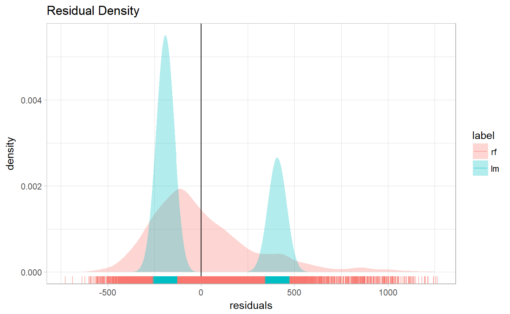
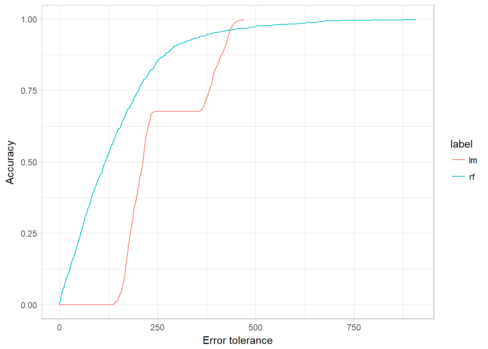
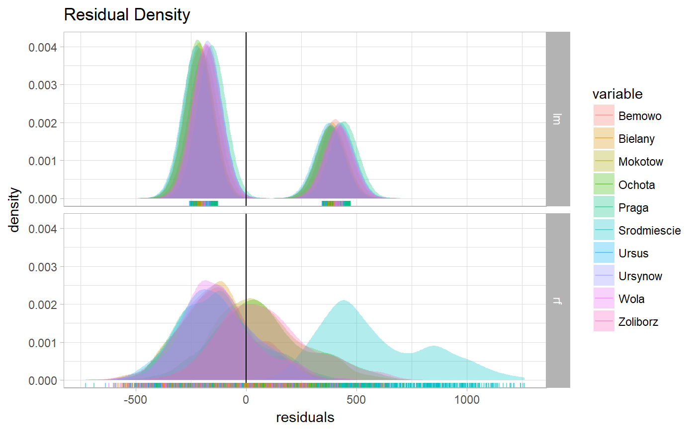
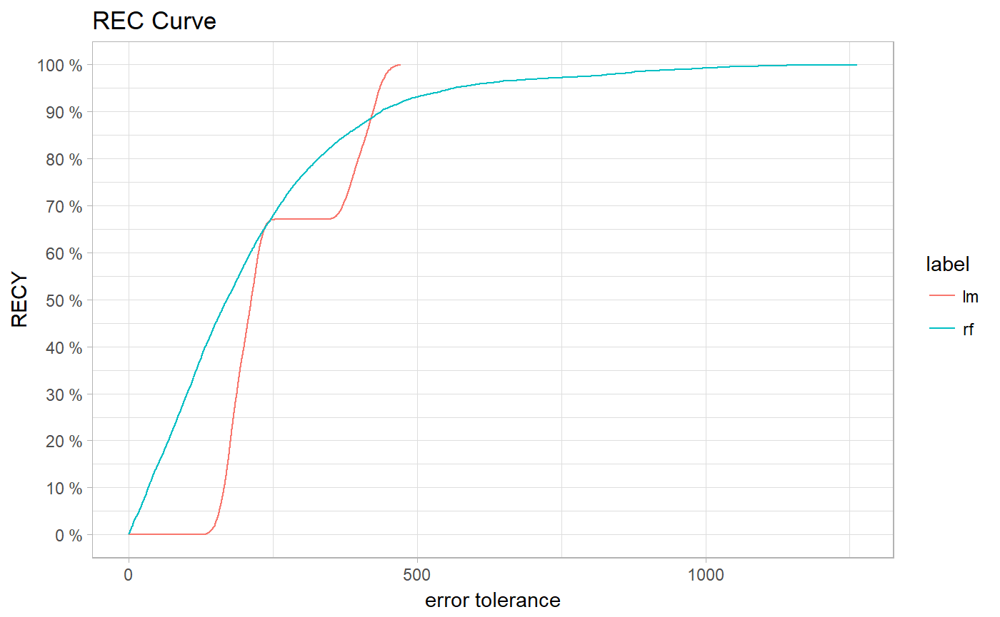
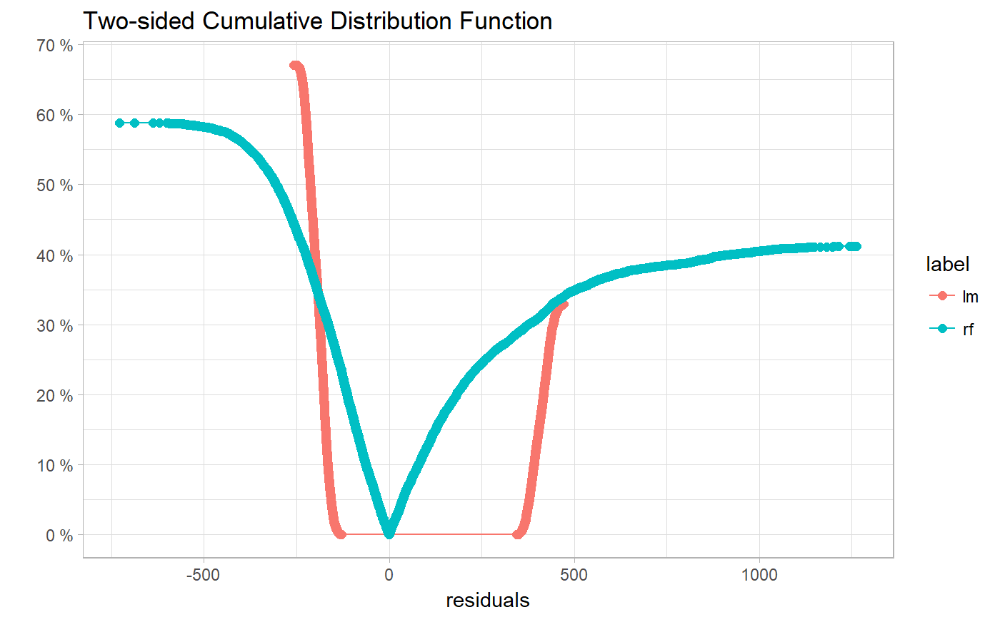
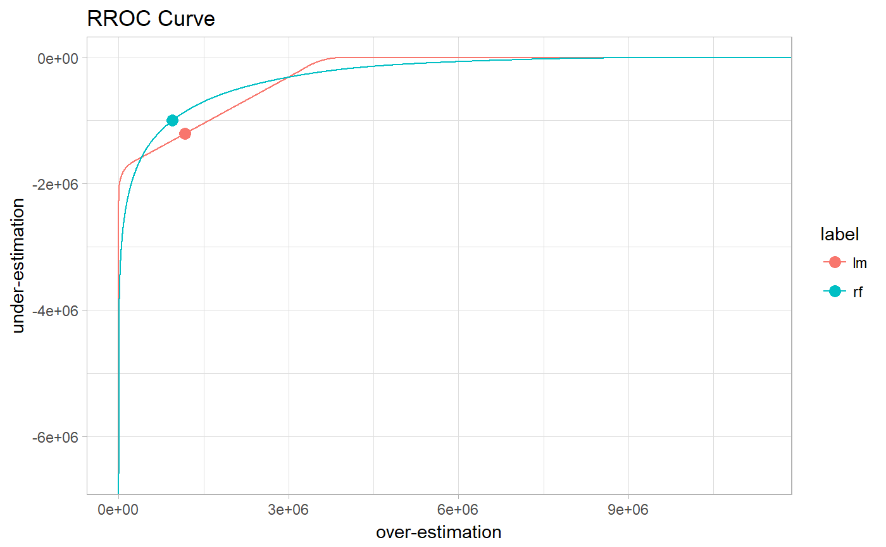
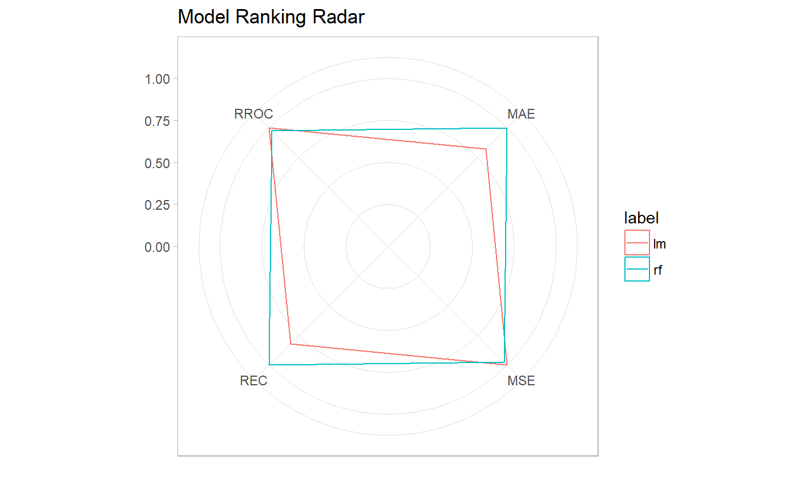
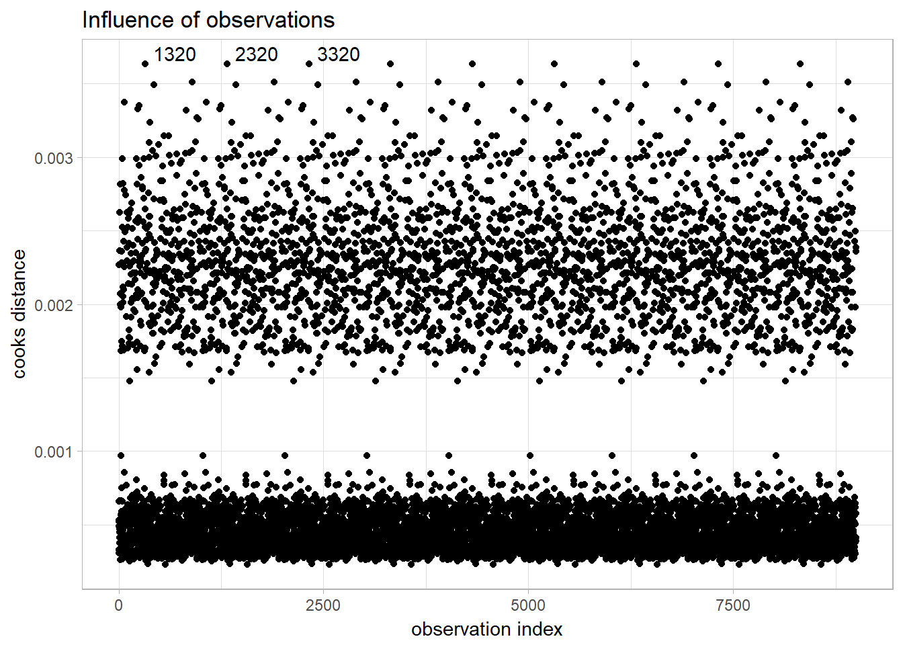

Introduction into model audit
Alicja Gosiewska
2018-05-08
Intorduction_into_model_audit.RmdThis vignette demonstrates how to use the auditor package. auditor provides methods for model verification and validation by error analysis.
Many models, such as random forests and neutral networks are nowadays treated as black boxes. Therefore, there is a lack of theory that describes the behavior of errors in those models.
Most methods provided in auditor package are model-agnostic, so can be used regardless of knowledge about errors.
Some of the graphical error analysis methods also have corresponding SCORES, which allow comparison of two models.
Regression use case - apartments data
To illustrate applications of auditor to regression problems we will use an artificial dataset apartments available in the DALEX package. Our goal is to predict the price per square meter of an apartment based on selected features such as construction year, surface, floor, number of rooms, district. It should be noted that four of these variables are continuous while the fifth one is a categorical one. Prices are given in Euro.
library(DALEX)
data("apartments")
head(apartments)## m2.price construction.year surface floor no.rooms district
## 1 5897 1953 25 3 1 Srodmiescie
## 2 1818 1992 143 9 5 Bielany
## 3 3643 1937 56 1 2 Praga
## 4 3517 1995 93 7 3 Ochota
## 5 3013 1992 144 6 5 Mokotow
## 6 5795 1926 61 6 2 SrodmiescieModels
We fit two models:
Preparation for error analysis
The beginning of each analysis is creation of a modelAudit object. It’s an object that can be used to audit a model.
Model audit
In this section we give short overview of a visual validation of model errors and show the propositions for the validation scores. Auditor helps to find answers for questions that may be crucial for further analyses.
Does the model fit data? Is it not missing the information?
Plotting residuals
Function plot() used on modelAudit object returns a Residuals vs fitted values plot.
plot(rf_audit)Residuals may be ordered by values any model variable of by fitted values. And both models may be plotted together.
plot(rf_audit, lm_audit, variable = "m2.price")In the following sections we will show how to use the plot() function to generate another diagnostic plots.
Autocorrelation
On the Autocorrelation plot there are i-th vs i+1-th residuals. This plot may be useful for checking autocorrelation of residuals.
plot(rf_audit, type="Autocorrelation", variable="m2.price")
Sometimes it is difficult to compare two models basing only on visualizations. Therefore, we have proposed some scores, which may be useful for choosing a betetr model. DW score and Runs score are based on Durbin-Watson and Runs test statistics. Details and interpretation of scores are described in scoreDW() and scoreRuns() functions.
Scores can be calculated with the scoreDW() and scoreRuns() functions and the score() function with argument score equals to “DW” or “Runs”.
score(rf_audit, type ="DW", variable = "m2.price")$score## [1] 0.4231403score(rf_audit, type ="Runs", variable = "m2.price")$score## [1] -54.42433Autocorrelation Function plot
Autocorrelation Function plot can be used to check randomness of errors. If random, autocorrelations should be near zero for lag separations. If non-random, then autocorrelations will be significantly non-zero.
plot(lm_audit, rf_audit, type="ACF")
Scale Location
This plot shows if residuals are spread equally along the ranges of predictors.
plot(rf_audit, type="ScaleLocation")
For comparing 2 models we can use GQ score, which is based on Goldfeld-Quandt test statistic. This score is computed and described in scoreGQ() function. And may be computed also in score() function with argument score equals “GQ”.
Half-Normal plots
The half-normal plot is one of the tools designed to evaluate the goodness of fit of a statistical models. It is a graphical method for comparing two probability distributions by plotting their quantiles against each other. Points on the plot correspond to ordered absolute values of model diagnostic (i.e. standardized residuals) plotted against theoretical order statistics from a half-normal distribution.
plotHalfNormal(lm_audit)## Gaussian model (lm object)
Which model has better performance?
Residuals Density
plotResidualDensity(rf_audit, lm_audit)
plotResidualDensity(lm_audit, rf_audit, variable = "m2.price")
plotResidualDensity(lm_audit, rf_audit, variable = "district")
Regression Error Characteristic (REC) Curve
Error Characteristic curves are a generalization of ROC curves. On the x axis of the plot there is an error tolerance and on the y axis there is a percentage of observations predicted within the given tolerance. REC curve estimates the Cumulative Distribution Function (CDF) of the error. Area Over the REC Curve (REC) is a biased estimate of the expected error.
plotREC(lm_audit, rf_audit)
Two-sided ECDF
Cumulative Distribution Function for positive and negative residuals.
plotTwoSidedECDF(lm_audit, rf_audit)
Regression Receiver Operating Characteristic (RROC)
The basic idea of the ROC curves for regression is to show model asymmetry. The RROC is a plot where on the x-axis we depict total over-estimation and on the y-axis total under-estimation.
For RROC curves we use a shift, which is an equvalent to the threshold for ROC curves. For each observation we calculate new prediction: where s is the shift. Therefore, there are different error values for each shift:
Over-estimation is caluclates as: . Under-estimation is calculated as: . The shift equals 0 is represented by a dot.
The Area Over the RROC Curve (AOC) equals to the variance of the errors multiplied by .
plotRROC(lm_audit, rf_audit)
Model Ranking Radar plot
Measures of model performance showed on radar plot. You can add your own scores by parameternew.score providing a named list of funtions that take one argument: object of class ModelAudit and return a numeric value. .
plotModelRanking(lm_audit, rf_audit)
How similar models are?
ModelCorrelation plot
plotModelCorrelation(lm_audit, rf_audit)
Principal Component Analysis of models residuals. PCA can be used to assess the similarity of the models.
Other questions
Which observations are outlyers?
Cook’s distances
Cook’s distance is used to estimate of the influence of an single observation. It is a tool for identifying observations that may negatively affect the model.
Data points indicated by Cook’s distances are worth checking for validity. Cook’s distances may be also used for indicating regions of the design space where it would be good to obtain more observations.
Cook’s Distances are calculated by removing the i-th observation from the data and recalculating the model. It shows how much all the values in the model change when the i-th observation is removed.
In the case of models of classes other than lm and glm the distances are computed directly from the definition, so this may take a while. In this example we will compute them for a linear model.
We will use the Prestige dataset from package car.
plot(lm_audit, type="CooksDistance")
Other methods
Here will be described plotLIFT(), plotCumulativeGain(), plotROC()